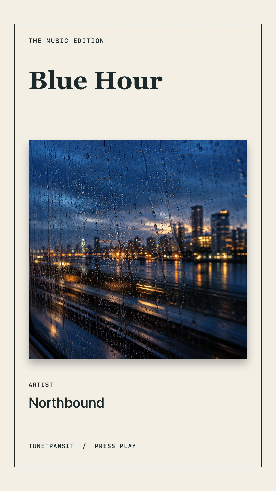
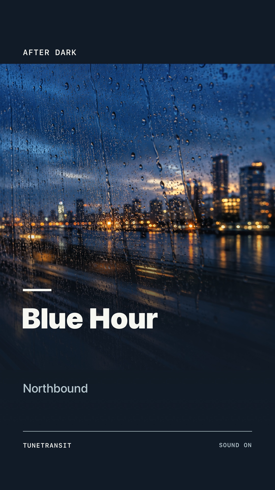

Monthly
$1.99 / month
A recurring subscription. Manage or cancel it through your Apple account.
Keep searching. Make your mixtapes yours. Share music in more places.
Get TuneTransit ↗Upgrade inside the app. Monthly or Lifetime, with the same Premium features.
See what’s free and what’s Premium ↓A little more expression
Story Cards turn a song into something you can post. All five designs are included with Premium.


Choose what works for you
Smart Link recipients can choose their music service in a browser without installing TuneTransit or buying Premium.
| What you can do | Free | Premium |
|---|---|---|
| Song & album searches | 3 per day | Unlimited |
| New mixtapes | Up to 5 songs | Up to 500 songs |
| Personal mixtape notes | Included | Included |
| Mixtape design customization | × | Included |
| Story Card exports | × | All 5 designs |
| Share sheet search | × | Supported platforms |
| Now Playing widgets | × | iPhone & iPad |
| TuneMessage | × | iOS Messages extension |
Where Premium takes you
Two ways to make it yours
Both plans include the same Premium features. Prices shown in US dollars; local pricing is available in the app.
$1.99 / month
A recurring subscription. Manage or cancel it through your Apple account.
$9.99 once
A one-time purchase for lifetime Premium access.
Buying Lifetime does not cancel Monthly. Cancel the monthly subscription in the App Store after upgrading to avoid further monthly charges.
Use Restore purchases on the app’s Premium page with the Apple account you used to buy it.